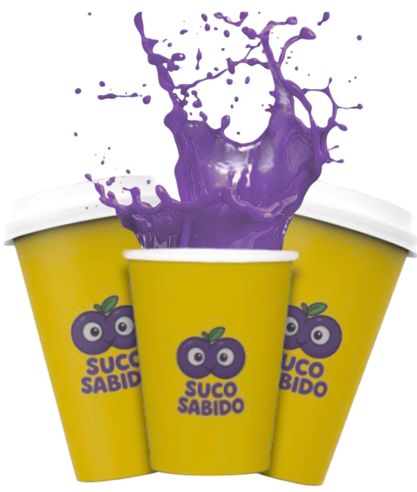

O Suco Sabido chegou para transformar a aprendizagem e a merenda nas escolas públicas. Unindo os sabores do norte e nordeste brasileiro, os sabores ZigZag do Saber, Frescor do Saber e Raio do Saber encantam crianças e adoslecentes. Cada suco conta uma história de origem afro-brasileira e indígena, promovendo cultura, qualidade de vida e conhecimento a cada gole. Mais do que nutritivos, nossos sabores educam, inspiram e incentivam as riquezas do nosso território.
